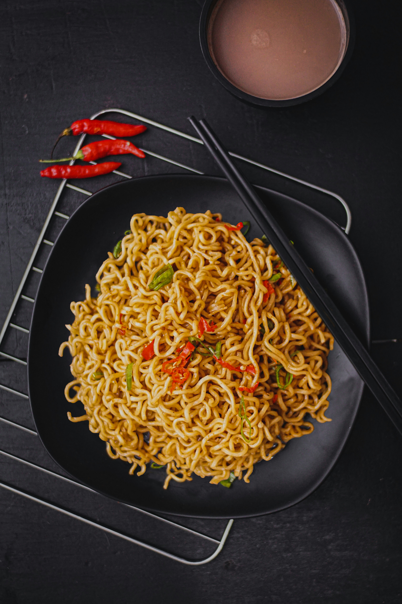

Home
Noodles

Description
Noodles are a versatile staple made from unleavened dough, boiled until tender and tossed in savory sauces, vibrant vegetables, or hearty proteins. From stir-fried Asian noodles packed with garlic and soy to comforting noodle soups, they offer a quick, satisfying dish with a perfect balance of chewy texture and rich flavor.
Ingredients
- 2 (3 ounce) packages soy sauce-flavored ramen noodles with seasoning packets
- 2 tablespoons vegetable oil, divided
- 3 large eggs, beaten
- 2 teaspoons vegetable oil, divided
- 4 green onions, thinly sliced
- 1 small carrot, peeled and grated
- ½ cup green peas
- ¼ cup red bell pepper, minced
- 2 tablespoons sesame oil
- 1 teaspoon sesame oil, or to taste
- 1 teaspoon soy sauce, or to taste
Steps
- Gather all ingredients.
- Bring a medium pot of water to a boil. Cook ramen noodles, reserving seasoning packets, in boiling water until softened, about 3 minutes. Drain noodles and set aside.
- Heat 1 tablespoon vegetable oil in a small skillet. Cook and stir beaten eggs in hot oil until scrambled and firm. Set aside.
- Heat 1 teaspoon vegetable oil in a large skillet or wok over medium heat. Add green onions into hot oil and stir fry until softened, 2 to 3 minutes. Remove green onions to a plate; set aside.
- Heat remaining 1 teaspoon vegetable oil in the same wok or skillet over medium heat. Add carrots, peas, and bell pepper separately; stir frying until softened, removing each to the plate with green onions when done.
- Combine 2 tablespoons sesame oil with remaining 1 tablespoon vegetable oil in the same skillet or a wok over medium heat. Stir fry cooked noodles in hot sesame-vegetable oil, tossing frequently, until golden, 3 to 5 minutes. Season with desired amounts of sesame oil, soy sauce, and reserved ramen seasoning packets; toss to coat.
- Stir in cooked vegetables, tossing frequently, until heated through, about 5 more minutes.
- Enjoy!